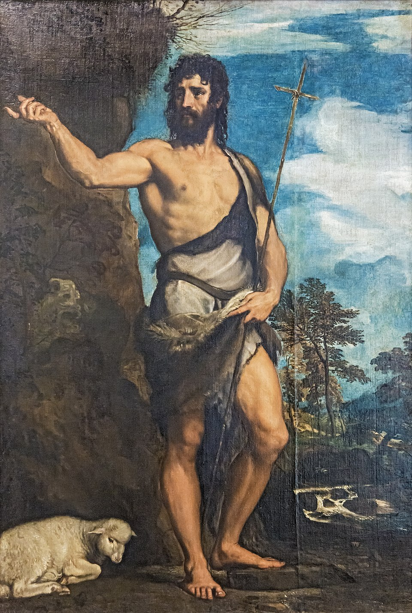

A few facts about john the baptist

John the Baptist,
was a major figure in the New Testament and the forerunner of Jesus Christ. He was born to elderly parents, Zechariah and Elizabeth, after an angel told Zechariah that their son would be special and chosen by God. Even before he was born, John was connected to Jesus when Mary visited Elizabeth, baby John leaped in his mother womb because he recognized the presence of the unborn Messiah.
As he grew up, John lived a simple, disciplined life in the wilderness. He wore clothing made of camel hair and ate locusts and wild honey. God called him to preach a message of repentance, telling people to turn away from their sins and prepare for the coming of the Lord. Crowds traveled from all over Judea to hear him preach and to be baptized by him in the Jordan River.
John mission was to prepare the way for Jesus. When Jesus came to be baptized, John first felt unworthy, but Jesus insisted. As Jesus rose from the water, the Holy Spirit descended like a dove, and God’s voice declared Jesus as His Son. This moment marked the beginning of Jesus public ministry. John was bold and fearless. He spoke against sin even among leaders, which led to his imprisonment by King Herod. Herod admired John’s message, but because of pressure and a vengeful plot involving Herodias and her daughter, John was eventually beheaded. Even though his life ended early, John the Baptist fulfilled his divine purpose. Jesus later said that among those born of women, no one was greater than John. His legacy is remembered as the prophet who prepared the world for the coming of the Savior.
Key facts about John the baptist
- He was the forerunner of Jesus, sent to prepare the way for the Messiah.
- His parents were Zechariah (a priest) and Elizabeth, who was related to Mary, Jesus’ mother.
- He was the one who baptized the Messiah.
- He baptized people in the Jordan River as a symbol of repentance.
About John The Baptist
- His birth was announced by the angel Gabriel.
- Jesus said that no one born of a woman was greater than John.
- He boldly spoke the truth, even to leaders like King Herod.